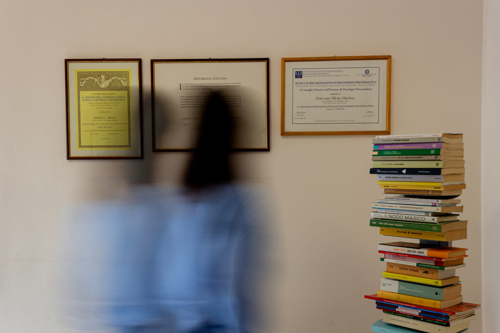

Professionisti
Workshop e percorsi dedicati all’utilizzo degli strumenti narrativi nei contesti appropriati.
PDT STORYTELLING CARDS
PdT può rappresentare una delle caratteristiche distintive dello Studio: non come metodo obbligatorio della psicoterapia, ma come area autonoma di formazione, ricerca, progettazione e utilizzo di strumenti narrativi.
POSIZIONAMENTO
L’area clinica deve restare fondata sulle competenze e sull’autonomia dei professionisti. PdT può invece diventare una piattaforma trasversale che mette in relazione Studio, formazione, professionisti e territorio.
Questa distinzione protegge la qualità clinica e, allo stesso tempo, consente di sviluppare un’identità originale difficile da replicare.
PDT LAB
Workshop e percorsi dedicati all’utilizzo degli strumenti narrativi nei contesti appropriati.
Osservazione, confronto e sviluppo metodologico degli strumenti, con attenzione a evidenze e limiti d’uso.
Possibili laboratori e interventi narrativi costruiti per contesti educativi e di promozione umana.

ECOSISTEMA
Le attività possono alimentarsi reciprocamente: lo Studio offre una base professionale, PdT crea occasioni di formazione e rete, i collaboratori portano nuove competenze, i progetti territoriali aprono nuove relazioni.
Il risultato è un modello meno dipendente dal solo tempo clinico individuale.
Ogni professionista mantiene la propria autonomia e utilizza strumenti e metodologie solo quando appropriati.